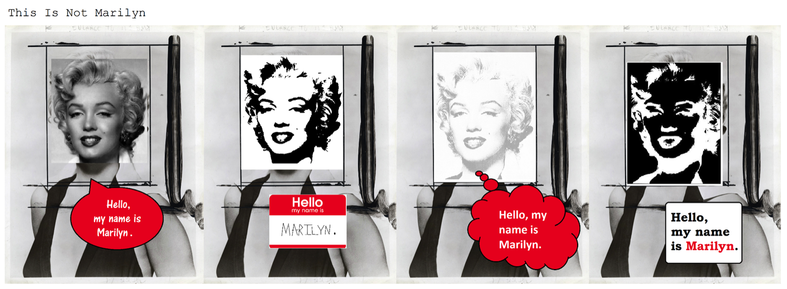

Chris Gavaler, Washington and Lee University
Posted: 6 June 2017

Chris Gavaler is an assistant professor of English at Washington and Lee University. He has published two books on comics, On the Origin of Superheroes (Iowa 2015) and Superhero Comics (Bloomsbury forthcoming 2017), and essays in Journal of Graphic Novels and Comics, Journal of American Culture, PS: Political Science and Politics, ImageTexT, Journal of Popular Culture, Image & Narrative, International Journal of Comic Art, and Studies in Comics.
Recommended citation:
Gavaler, Chris. “This Is Not Marilyn: The Dailies.” Sequentials, no. 1, 2017.